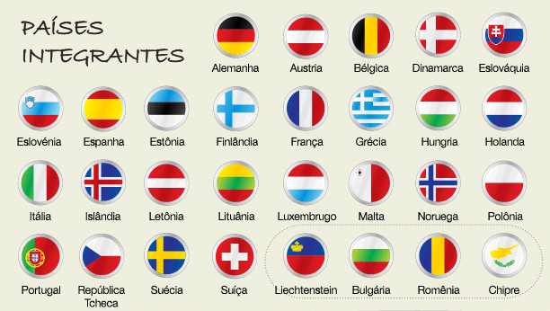

Exemplo de post
Motivos para você viajar pela América do Sul.
Viajar pela América do Sul é um dos grandes prazeres da vida de um viajante. O nosso continente tem uma incrível soma de destinos, experiências, histórias e paisagens para todos os gostos. De praia a picos de neve, temos de tudo. E sem andar tanto assim! Então, você já parou para pensar nos motivos para você viajar pela América do Sul?
É seguro
Depois que se pega o gosto por caminhar por todo o lado, em qualquer horário do dia, sem medo de ser feliz, ah, não é fácil abrir mão disto mais não! Na Europa, pelo menos nos países por onde andei até hoje, nunca me senti insegura, nem tarde da noite, nem à pé, nem no metrô, nem no ônibus, enfim, em nenhum lugar. E poder ir e vir sem tanta preocupação não tem preço (tá, tem, em euro, mas ainda assim vale a pena). E eu falei sem tanta, porque, claro, nenhum lugar do mundo é o paraíso imune de qualquer situação embaraçosa. Mas que por lá a sensação de segurança é um ponto forte, é!.

É fácil de se locomover
Você chega no aeroporto e não precisa se submeter a táxis caros ou se obrigar a alugar um carro. Em todos os aeroportos onde embarcamos e desembarcamos na Europa até hoje, sempre havia ótimo transporte público – geralmente metrô ou trem. E nas cidades, não é diferente. Conseguimos nos locomover por tudo que é canto com facilidade, segurança e conforto, e sem gastar uma fortuna por isso. Dá uma invejinha…

É possível conhecer vários países na mesma viagem
Pela proximidade dos países neste continente, é possível conhecer mais de um na mesma viagem e assim, enriquecer sua estada por lá. E a facilidade de pipocar de um país para o outro é outro ponto positivo e maravilhoso. Dentro do continente há livre acesso e você pode atravessar qualquer fronteira sem passar por controles. E ainda dispõe de um transporte público sem igual para isso e uma variedade que permite escolher o melhor preço, o que mais agrada, o mais rápido dentre as opções: trem, ônibus, avião, ou ainda aluguel de carro. Que tal em uma mesma viagem conhecer a França, dar uma passadinha pela Suíça, se apaixonar por Mônaco e de quebra, bater um papinho com os simpáticos portugueses lá na terrinha?

A qualidade dos serviços
Nós estamos tão acostumados com certos serviços que nos são oferecidos sem tanta qualidade que não nos damos conta de como é bom, por exemplo, dirigir em uma estrada lisinha, sem buracos e sem pegadinhas do tipo, radar móvel. Sim, nunca vi um radar móvel nas rodovias da Europa. Calçadas, ah, você pode andar de olhos fechados sem o risco de cair em algum buraco. O cuidado com a qualidade de vida das pessoas é tanto que há até isolamento acústico na lateral das rodovias para não atrapalhar os moradores vizinhos
Muita riqueza cultural, histórica e arquitetônica
O velho continente é um livro de história ambulante, só que, assim, sem a parte monótona. Em vários lugares você encontrará cidades históricas, castelos, cidades medievais, enfim, não tem como ir para lá e não encher sua caixinha de conhecimento com muita cultura, história, enchendo os olhos com aquela beleza toda. E por ter tantos países pequenos grudadinhos, a diversidade cultural é um ponto forte da viagem a ser vislumbrada.Quanto à arquitetura, ah, deixa eu suspirar primeiro… as construções, prédios, igrejas, castelos, palácios, monumentos, pontes, são de encher os olhos. A maioria das cidades principais tem centro histórico e construções que são verdadeiras obras de arte. E o melhor: sempre bem conservadas.
É ideal para comprar algumas coisinhas
A Europa não é o paraíso das compras, como os Estados Unidos. Nem tudo tem preço convidativo. Mas algumas coisas, como perfume, não tem lugar melhor, afinal, a maioria dos melhores são produzidos por lá (principalmente na França). Alguns cosméticos lá também produzidos, são uma tentação e como o inverno de lá é bem gelado, dá também para aproveitar e comprar casacos e botas bem quentinhas e especiais para o frio intenso.
Não precisa de visto
Países membros da União Européia e até alguns de fora como Inglaterra e Suíça, não exigem visto de brasileiros. Basta carimbar o passaporte no país de entrada e o acesso é livre para qualquer outro, sem necessidade de passar em imigração ou se submeter a outras burocracias. Parece pouco, mas que esta história de visto é uma chatice e um gasto extra, é sim.

As comidinhas
Ah, esse motivo é simplesmente delicioso! Alguns quitutes, embora já existam por aqui, são muito mais gostosos se comidos nos seus países de origem. Gelato italiano, pastel de nata, salame de chocolate, crepe francês, chocolate suíço, Sachertorte (bolo de chocolate) de Viena, além de seus cafés maravilhosos, Trdelnik (pão de rolo de Praga), macaron, risotto e raclete são apenas 10 tentações que deixo aqui. Não deixe de provar quando estiver por lá.